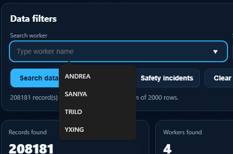
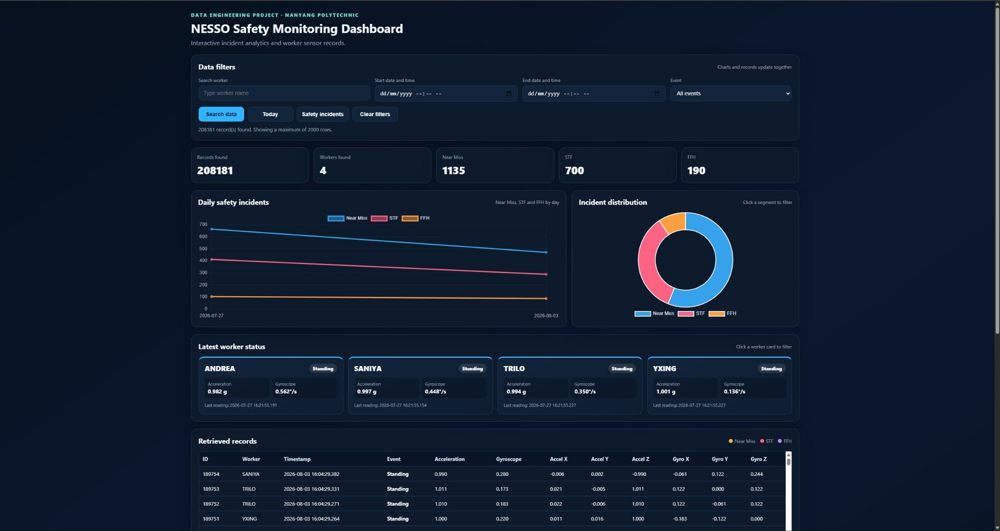
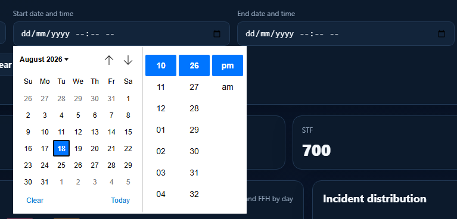
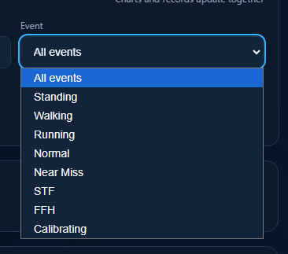
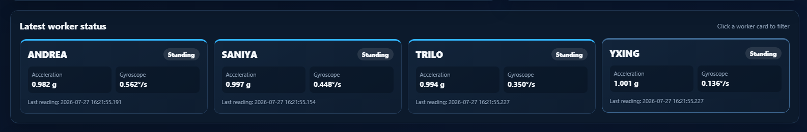
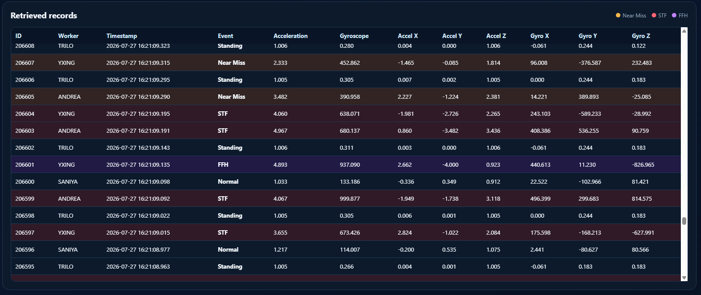
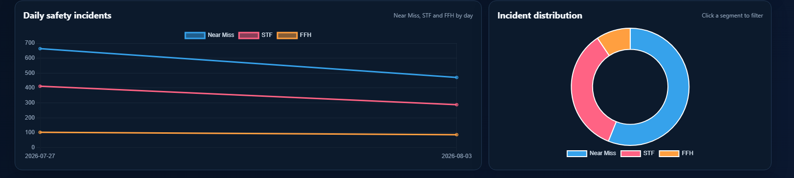

01
Worker Search
Search and view records for specific workers.
ANDREA · SANIYA · TRILO · YXING03 / DATA ENGINEERING
IoT-based worker safety monitoring using wearable NESSO sensors, BLE, Python and an interactive Flask dashboard.

PROJECT INFO
The NESSO Safety Monitoring System is an IoT-based project developed to monitor worker movements and identify potential workplace safety incidents using wearable NESSO sensors. Four NESSO devices, worn on the workers' hips, read accelerometer and gyroscope data from a BMI270 motion sensor at 2 Hz and transmit the readings to a laptop through Bluetooth Low Energy (BLE). A Python application validates and cleans the incoming data, calculates movement features, and uses threshold-based logic to classify worker activities (Standing, Walking, Running) and safety events such as Near Miss, Slip/Trip/Fall (STF), and Fall From Height (FFH). Processed readings and detected events are stored in an SQLite database and displayed through an interactive Flask web dashboard. A separate version of the dashboard was deployed using Render for browser-based access to the stored dataset, while live BLE sensor collection continues to run locally.
CLICKABLE ARCHITECTURE
Select a step to see how motion data becomes a dashboard record.
Four NESSO devices collect accelerometer and gyroscope readings at 2 Hz.
The Render dashboard is a separate browser-accessible view of the stored dataset. Live BLE collection runs locally.
DASHBOARD FEATURES

Search and view records for specific workers.
ANDREA · SANIYA · TRILO · YXING
Retrieve records within a selected date and time range.
Historical date-time filtering
Filter safety events individually to focus on a specific incident category.
Near Miss · STF · FFH
View the latest status of all four workers at one glance.
Real-time local worker overview
Important events are colour-highlighted so users can identify them quickly.
Orange — Near Miss · Red — STF · Purple — FFH
Daily incident graphs and incident-distribution summaries support safety analysis.
Trend and distribution analysisRaw sensor readings are difficult to interpret directly, especially when multiple workers and large amounts of historical data are involved. The project needed a way to collect motion data, detect possible safety incidents, store the results and make them easy to inspect.
Four NESSO devices collect accelerometer and gyroscope readings at 2 Hz and send them to a laptop using BLE. Python first cleans the data, rejecting incomplete, non-numeric, out-of-range and duplicate packets, then calculates acceleration magnitude √(ax²+ay²+az²) and gyroscope magnitude √(gx²+gy²+gz²). Threshold-based rules label each reading as Standing, Walking, Running, Near Miss, STF or FFH. The processed records are stored in SQLite and presented through a Flask dashboard for searching, filtering, monitoring and analysis.
Across the four monitored workers, the dashboard surfaced clear patterns in event frequency and severity.
The final prototype combines local live BLE sensor collection with an online dashboard for remote analysis of the stored dataset, demonstrating an end-to-end data engineering workflow from sensing and processing to database storage, visualisation and deployment.
Open Live Dashboard ↗